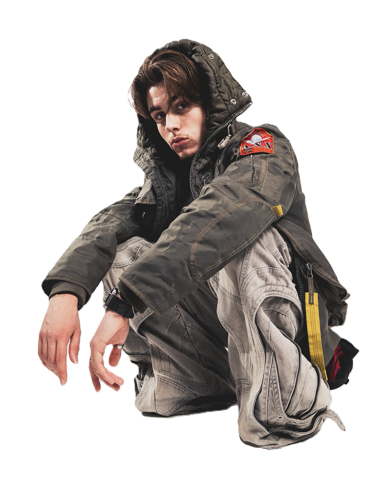

Audiovisual Studio Based In Amsterdam
We are XOLunar, your creative partner in professional audiovisual solutions based in the heart of Amsterdam. We specialize in crafting compelling visuals that transform your artistic vision into reality.
Whether you're a musician, brand, or content creator, our expert team is dedicated to helping you make a bold, unforgettable statement.
To the moon and back.
We are XOLunar, your creative partner in professional audiovisual solutions based in the heart of Amsterdam. We specialize in crafting compelling visuals that transform your artistic vision into reality.
Whether you're a musician, brand, or content creator, our expert team is dedicated to helping you make a bold, unforgettable statement.
Founded in 2020
As the world adapted to a new digital reality, we saw a growing need for better branding and visuals. Musicians, streamers, and content creators were connecting with their audiences in new ways. They needed media that could do more:
Images that moved, sounds that stuck, and designs that told a story.
Today, the line between music, video, and art is blurring. Concerts use immersive visuals. Videos come alive with sound. Even photos can carry a mood, like a scent triggers a memory. That’s the space where we work.
What we do
We create tailored audiovisual experiences. From animated visuals for live performances to branding packages for creators, our work blends sound, motion, and design to amplify your message. Every project is unique, but our goal is always the same: to make your ideas stand out.
Why XOLunar?
Because we listen. We believe the best projects start with understanding your vision. Then we bring the skills, tools, and creativity to make it happen. Whether it’s a big concert or a simple logo, we treat every project like it’s our own.